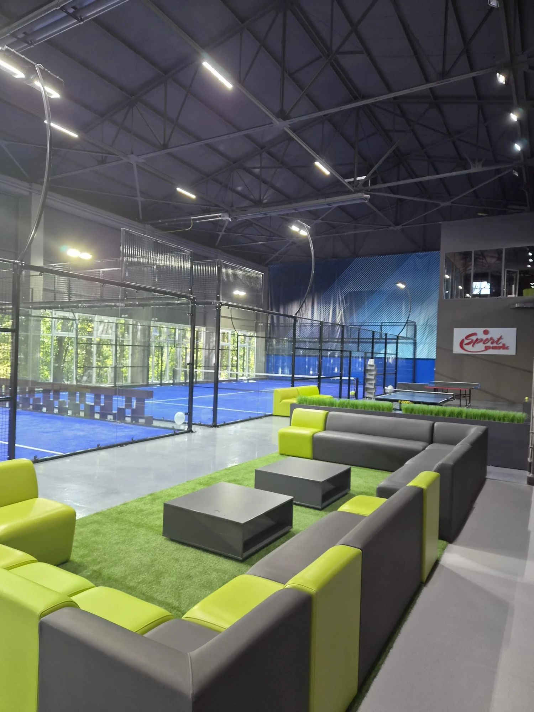

Why This Question Matters Now
Current padel discussions show two very different expectations. Some players and new operators want better social areas, recording equipment, retail and community space. At the same time, players in the United States are questioning expensive “premium” club models that bundle coworking, bars, restaurants, wellness and other extras into a high-priced experience.
For an investor, that creates an important planning question: which amenities actually improve retention or revenue, and which simply increase CAPEX and OPEX?
Do not add an amenity because it looks premium in a rendering. Add it because it solves a player need, supports the brand position or produces measurable revenue.
1. The True Must-Haves Come Before the Amenities
Before planning a café, sauna or coworking area, make sure the club gets the fundamentals right:
- Consistent, well-installed court surface.
- Lighting that avoids glare and dark zones.
- Safe circulation around courts.
- Reliable booking and payment.
- Clean toilets and changing facilities appropriate to the market.
- Drinking water and basic player seating.
- Storage and maintenance access.
- Good ventilation or weather protection.
- Clear customer support and court rules.
These basics influence repeat play more directly than a premium-looking lobby. See the Padel Club Design Checklist for the full venue-planning sequence.
2. A Good Social Area Often Has High Value per Square Metre
Padel is social by nature. Players arrive before a match, wait for partners, watch friends and often stay afterward. That makes a comfortable social area one of the most useful non-court spaces in many club formats.
The area does not need to be oversized. A well-positioned lounge with court views, seating, charging points, water and a simple beverage offer can support dwell time without consuming the capital and staffing required by a full hospitality operation.
3. Café or Bar: Useful; Full Restaurant: Project-Specific
A café or beverage counter can be a practical secondary-revenue feature, especially for clubs with leagues, coaching and events. A full restaurant is a different business. It requires more floor area, kitchen infrastructure, staffing, inventory, licensing and management.
Before adding a restaurant, model its independent economics instead of assuming that “premium club” automatically means food service.
4. Recording and Match Video Are Becoming More Relevant
Players increasingly use video for coaching, social media and match review. New club discussions specifically mention recording gear as a desirable feature. For commercial projects, it is much easier to plan camera positions, power and network coverage before opening than to retrofit them later.
Recording can also support coaching packages, tournaments and content marketing, making it one of the extras with a clearer connection to the core sport.
5. Retail Works Best When It Solves Immediate Player Needs
A pro shop does not have to become a large inventory business. Balls, grips, overgrips, basic rackets, rental rackets and selected accessories solve immediate problems and can generate secondary revenue.
For many clubs, a compact, curated retail area is more efficient than using valuable floor space for a large store that duplicates online shopping.
6. Showers, Lockers and Changing Rooms Depend on the Customer Journey
These facilities become more important when players visit before work, during lunch or on the way to another activity. Destination or resort projects may have very different requirements from neighborhood outdoor courts.
Size them from expected peak occupancy, local norms and customer behavior—not simply from court count.
7. Coworking Can Work, but It Is Not a Universal Padel Feature
Coworking space can fit a high-income membership concept or a club designed around long dwell times. But it also occupies revenue-producing floor area and can create expectations for Wi-Fi, quiet zones, desks and hospitality service.
Recent US discussions show that some players actively dislike paying higher prices for lifestyle extras they do not use. This makes coworking a positioning choice, not a standard requirement.
8. Sauna, Gym and Wellness Should Be Treated as Separate Investments
Wellness features can strengthen a destination club, hotel or premium membership concept. They also add mechanical systems, changing requirements, cleaning, staffing, insurance and maintenance.
If wellness is not part of the core customer proposition, it can become expensive non-court space. Model utilization and incremental membership revenue before including it.
9. Event Space Can Be Valuable for Multi-Court Clubs
Clubs with enough courts to run leagues, corporate events and tournaments may benefit from flexible spectator and event areas. The best space can serve multiple uses: normal player seating on weekdays, tournament viewing on weekends and sponsor or community activity during events.
Flexible space is often more efficient than a permanently dedicated event zone.
10. Community Programming Is an Amenity Without Heavy Construction
Open matches, ladders, beginner nights, leagues, clinics and social events can improve retention without major building cost. In many markets, a strong community program creates more value than an expensive physical feature.
This also means the club should plan noticeboards, digital screens, group communication and staff workflows—even when the building itself is relatively simple.
11. Premium Design Should Support Pricing Power, Not Create It by Itself
Premium finishes, dark interiors and hospitality-style spaces can support brand positioning. They do not guarantee that the market will accept premium court rates. If land, warehouse rent and amenities push the required price too high, the club can reduce the number of players able to participate.
Use the Padel Club Profitability & ROI Model to test whether higher pricing and secondary revenue actually cover the extra capital and operating costs.
12. Protect the Court Count and the Experience at the Same Time
There is no universal answer to “courts or lounge.” A club with too few courts can struggle to create enough bookable inventory. A club that squeezes in the maximum possible court count can feel cramped and under-served.
Compare the value of each additional court against circulation, social space and operational requirements using How Many Padel Courts Does a Club Need?.
Must-Have, Useful Extra or Premium Optional?
| Facility | Typical role | Planning view |
|---|---|---|
| Clean toilets / changing | Basic player need | Must-have for most commercial clubs |
| Seating / waiting area | Player flow and social use | High priority |
| Water / simple beverages | Convenience and secondary spend | High priority |
| Compact café / bar | Dwell time and revenue | Useful where demand supports it |
| Recording system | Coaching, content, player value | Increasingly useful |
| Compact pro shop | Immediate equipment needs | Useful, especially with rentals |
| Event / spectator space | Leagues, tournaments, corporate use | Important for larger clubs |
| Coworking | Lifestyle membership concept | Market-specific |
| Full restaurant | Hospitality business | Project-specific, high complexity |
| Gym / sauna / wellness | Premium destination positioning | Optional; requires separate ROI case |
Three Club Models to Compare
Lean Community Club
Focus on good courts, fair pricing, clean facilities, seating, drinks, coaching and community programming. This model protects court access and limits non-core CAPEX.
Balanced Commercial Club
Add a stronger lounge, café or bar, compact retail, recording, leagues and event capability. This is often a practical middle ground for multi-court venues.
Premium Destination Club
Add hospitality, coworking, wellness or other lifestyle features only where the target market supports the membership or court pricing required to pay for them.
Amenities Investment Checklist
- What player problem does this feature solve?
- How much floor area does it consume?
- What is the initial construction and equipment cost?
- What staffing and maintenance does it add?
- Will it generate direct revenue or increase retention?
- Does the target customer actually value it?
- Could the same space be used for another court or flexible area?
- Can the feature be added later if demand is proven?
- Does it make the club easier or harder to operate?
- Does it support the intended price position?
Current Community Discussions That Informed This Guide
These discussions are useful as demand signals rather than engineering or financial standards. They show a real tension between players asking for better social spaces and facilities, and players questioning premium club pricing driven by extensive lifestyle amenities.
- New Padel Club Ideas — social area, recording gear, retail and court-count trade-offs
- New padel club — DOs and DONTs — lighting, turf and operational basics
- US club pricing discussion — premium extras versus affordable play
- US affordability discussion — membership and court pricing
External perspective: SPORTENVO also summarized this planning trade-off for a broader business audience on Medium: What Commercial Padel Clubs Get Wrong About Layout and Amenities.
Related SPORTENVO Guides
- Padel Club Design Checklist
- Padel Club Business Plan
- Padel Club Profitability & ROI Model
- How Many Padel Courts Does a Club Need?
- Padel Club Site Selection
Planning the court mix and club facilities together?
Share the country, site dimensions, target court count and venue positioning. SPORTENVO can help structure the court, foundation, roof and site-interface questions before equipment is ordered.
Start Your Project ↗